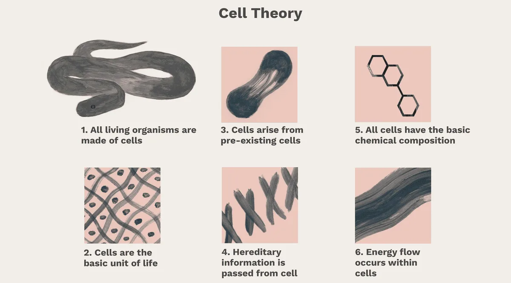
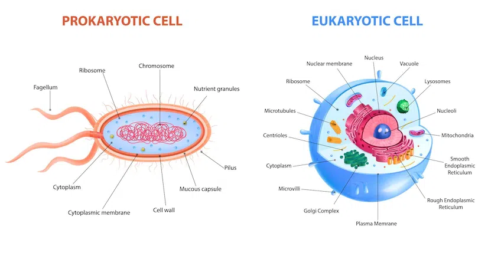
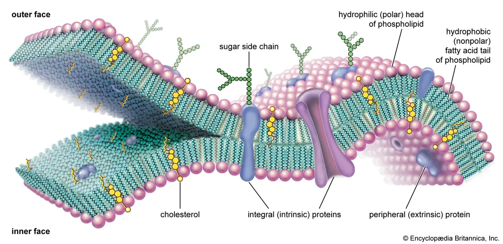
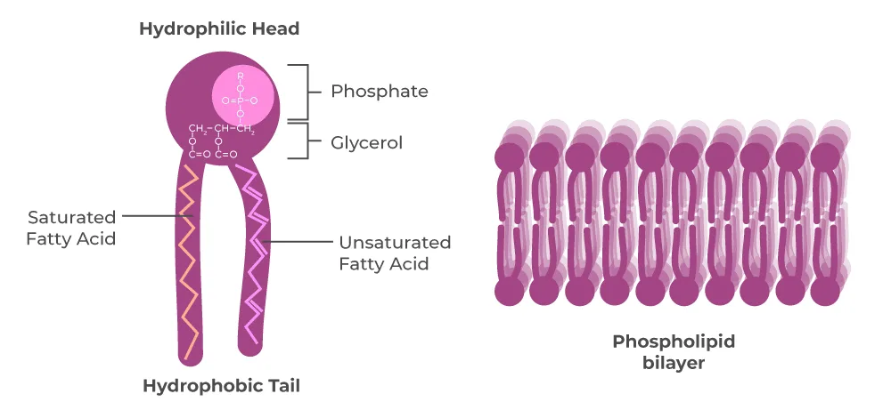
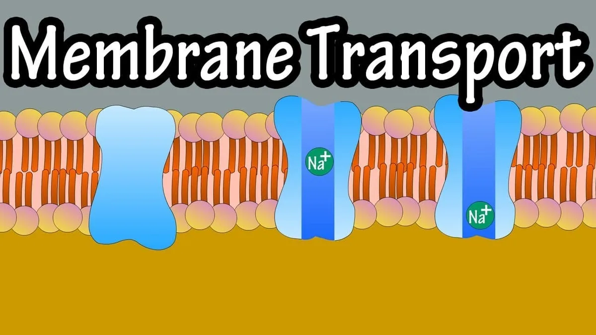
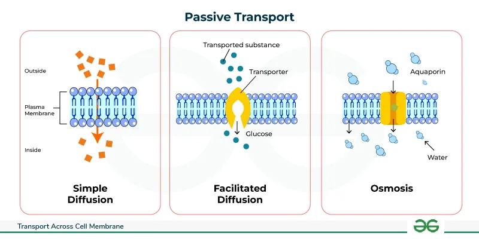
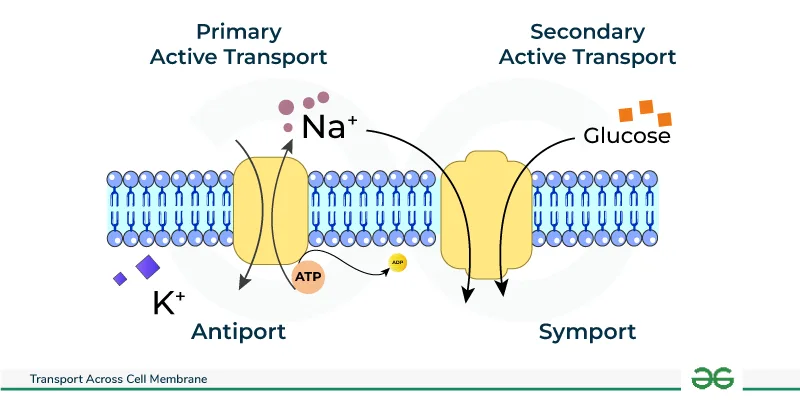
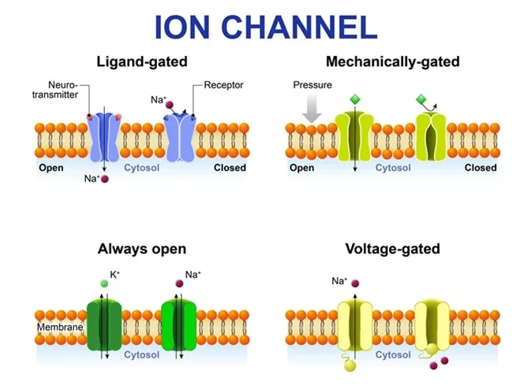

Expanded Nursing Uganda Explanation
Cell Theory, Structure & Function should be understood beyond a short definition. Link the concept to patient history, focused assessment, common risks, nursing priorities, documentation and evaluation of outcomes.
Contents — 44 sections (tap to expand)
01 The Cell: An Introduction to the Basic Unit of Life
To understand human health, disease, pharmacology, and physiology, we must first master the cell. A cell is not just a building block; it is a highly complex, bustling metropolis, complete with its own power plants, shipping centers, recycling facilities, and a heavily guarded command center.
02 History of Cells & the Cell Theory
The discovery of the cell was entirely dependent on the invention of the microscope. Before the 1600s, humanity had no idea that a microscopic world existed.
An English scientist who used an early, primitive compound microscope to examine a thin slice of dead plant tissue (cork). He observed what looked like hundreds of empty, small rectangular boxes. He is responsible for naming them "cells" because they heavily resembled the small, austere rooms (cellula) that monks lived in at monasteries.
A Dutch tradesman and master lens maker. He was the first to view and describe living organisms . Using a simple, single-lens microscope of his own powerful design, he observed pond water and scrapings from his teeth, discovering motile bacteria and protozoa which he affectionately called "animalcules" (little animals).
A German botanist who, after extensive microscopic observation of various plant species, concluded that all plants were made of cells .
A German zoologist who, parallel to Schleiden, concluded that all animals were made of cells . Together, Schleiden and Schwann recognized the universal nature of cells and became the co-founders of the first two tenets of the cell theory.
A brilliant German medical doctor and pathologist. He observed cells dividing under the microscope and reasoned that all cells come from other pre-existing cells ( "Omnis cellula e cellula" ), completing the classical cell theory and establishing the basis of cellular pathology.
03 The Cell Theory
This theory is one of the absolute cornerstones of modern biology and medicine. It provides the fundamental framework for understanding life. It consists of three main tenets, representing the key rules about cells:
- All living organisms are made up of one or more cells. Explanation: Whether it is a tiny, single-celled bacterium (like an amoeba or E. coli ), a towering redwood tree, or a human being composed of over 30 trillion cells, the basic unit of structure is always the cell.
- The cell is the basic unit of structure and function in an organism (the basic unit of life). Explanation: The cell is the smallest independent level at which life functions can be carried out. Just as a single brick is the basic unit of a wall, a cell is the basic unit of a tissue, which builds an organ, which ultimately builds an organism. All the complex biochemical processes of life (metabolism, energy generation) happen strictly within cells.
- Cells arise from pre-existing cells (cell division). Explanation: Cells do not spontaneously generate out of nowhere from non-living matter. New cells are produced exclusively through cellular replication and division (such as mitosis for growth or meiosis for reproduction) from parent cells that already exist. This explains biological growth, tissue repair, and the continuity of life across generations.
Why is this theory crucial for medicine? It dictates that to understand how the human body functions in health, and how it fails in disease, we must first understand how cells work. Diseases—from cancer to cystic fibrosis—are fundamentally cellular malfunctions. When cells are damaged, grow uncontrollably, or fail to communicate, the entire organism suffers.
04 Basic Characteristics & Classification of Cells
A cell is the smallest functional unit of a living organism, fully capable of performing all essential life functions independently. A functional cell can:
- Eat (take in nutrients), grow, and move.
- Perform necessary internal maintenance, recycle damaged parts, and dispose of toxic wastes.
- Adapt dynamically to physical and chemical changes in its environment.
- Replicate itself to ensure survival.
05 Discoveries Since the Cell Theory: Two Major Categories
Further microscopic research and genetic analysis have allowed us to classify all cells on Earth into two major evolutionary categories based on their internal complexity and the presence of membrane-bound structures.
These are ancient, primitive cells that entirely lack a true nucleus and lack other membrane-bound organelles.
- Examples: Bacteria (like Staphylococcus ) and Archaea (extremophiles living in boiling vents).
- Complexity: Considered the simplest, smallest type of living cell (usually 1-5 micrometers).
- Genetic Info: DNA is not trapped in a nucleus. Instead, it exists as a single, continuous, circular chromosome floating freely in a central area called the nucleoid region .
- Structure: Enclosed by a plasma cell membrane and typically protected by a rigid outer cell wall (often made of peptidoglycan).
- Organelles: While lacking membrane-bound organelles, they DO contain ribosomes (which are non-membrane bound structures) to perform vital protein synthesis.
These are highly evolved cells that possess a true, membrane-bound nucleus and a vast array of specialized, membrane-bound organelles.
- Examples: Protists (amoebas), Fungi (yeasts, mushrooms), Plants, and Animals (including humans).
- Complexity: Significantly more complex and much larger (10-100 micrometers) than prokaryotes.
- Features: They possess a distinct nucleus safeguarding linear DNA, highly compartmentalized organelles to separate chemical reactions, and a robust internal protein scaffolding called the cytoskeleton .
- Shared Structures: All eukaryotic cells possess three main components: a Nucleus , a Cell Membrane , and Cytoplasm .
- Main Types: Plant Cells (which have rigid cell walls and chloroplasts) and Animal Cells (which lack walls for flexibility).
06 The Cell / Plasma Membrane
When you go swimming, have you ever wondered why your cells don't instantly fill up with water and burst, or why your internal cell juices don't leak out into the pool? The reason is a critical boundary structure called the cell membrane (or plasma membrane). It completely envelops the cell, protects it from the unpredictable outside environment, and strictly determines what can enter and leave—a vital physiological property we call selective semi-permeability .
07 Cell Membrane Structure: The Fluid Mosaic Model
When viewed with a powerful electron microscope, the membrane appears as a delicate, double-layered line about 7.5 to 10 nanometers thick. It is not a solid wall; rather, it is described by the Fluid Mosaic Model . It behaves like a fluid ocean of fat in which protein "icebergs" float and move around. It is primarily composed of a structure known as the Phospholipid Bilayer .
08 The Phospholipid Molecule
The foundation of the membrane is the phospholipid. Millions of these molecules line up side-by-side to form the bilayer. Each phospholipid is amphipathic, meaning it has two distinct, chemically opposing parts:
- Phosphate Head: This part is Hydrophilic (water-loving) and polar (carries a charge). Because tissues are mostly water, these heads face outward toward the watery extracellular fluid, and inward toward the watery intracellular cytoplasm.
- Fatty Acid Tails: Each molecule has two tails that are Hydrophobic (water-fearing) and non-polar. To escape the water, these tails turn inward to face each other, creating a dry, fat-filled core in the middle of the membrane. (This lipid core is why water-soluble drugs cannot easily cross into cells without a transporter!)
09 Chemical Compositions & Other Components
- Proteins: Embedded in or attached to the lipid bilayer, they act as the doors, tunnels, pumps, and communicators for the cell. Integral proteins: Span the entire thickness of the membrane (transmembrane), acting as channels for ions to pass.
- Peripheral proteins: Found loosely attached only on the inner or outer surface, often acting as enzymes or anchoring the cytoskeleton.
- Carbohydrates: Sugars found strictly on the outer surface of the cell. They attach to proteins (forming glycoproteins ) or to lipids (forming glycolipids ). Together, they form a sugary coating called the glycocalyx . They act as the cell's unique "identification tags," allowing the immune system to recognize the cell as "self" rather than a foreign invader.
- Cholesterol: These lipid molecules are wedged between the phospholipid tails. They act as temperature buffers, helping to maintain the membrane's perfect level of fluidity and stability (preventing it from freezing solid in the cold, or melting apart in the heat).
10 Functions of the Cell Membrane
The plasma membrane is highly active and performs several vital jobs for survival:
- Protective Barrier: Keeps delicate internal organelles safe from external toxins.
- Selective Permeability: The primary controller of what enters and exits, restricting large or charged molecules.
- Absorptive Function: Takes in essential nutrients (glucose, amino acids) needed for metabolism.
- Excretory Function: Expels metabolic wastes (like urea) so they don't poison the cell.
- Gas Exchange: Allows life-sustaining O₂ to diffuse in, and toxic CO₂ to diffuse out.
- Maintains Shape: Anchors to the internal cytoskeleton to help the cell keep its physical form.
11 Transport Mechanisms: How Cells Move Things
A cell is a busy factory. It constantly needs to bring in raw supplies and get rid of trash. The cell membrane acts as the ultimate gatekeeper, utilizing several different transport methods. How easily a substance crosses depends heavily on its size and whether it is lipid-soluble (likes fat) or water-soluble (likes water).
12 No Energy Needed!
This relies entirely on physics. Substances naturally move from an area of high concentration to an area of low concentration (moving "down" the concentration gradient) until equilibrium is reached. It costs the cell zero ATP.
- A. Simple Diffusion: The simplest way small, fat-soluble, uncharged molecules (like O₂, CO₂, and steroid hormones) sneak right through the lipid bilayer. It's a slow process driven purely by the concentration gradient.
- B. Facilitated Diffusion: Substances that are too large or too water-soluble (polar/charged) to cross the fat layer (like glucose or amino acids) get a "ride" using special integral carrier proteins without the expenditure of energy. The carrier changes shape to let the molecule in. It is much faster than simple diffusion but is limited by the number of carriers available.
- C. Osmosis: The specific, vital movement of water across a semi-permeable membrane. Water moves from an area of higher water concentration (lower solute) to an area of lower water concentration (higher solute) in a desperate attempt to dilute the solutes and even out the concentrations.
13 Energy Required!
This is like pushing a heavy boulder uphill. It forces substances to move against their natural concentration gradient (from low to high concentration). Because it fights physics, it strictly requires biological energy, usually obtained from burning ATP .
- Key Example: The Sodium-Potassium (Na+/K+) Pump: This is the most famous and vital active transport mechanism in the body (using up to 30% of your body's daily energy!). This protein pump uses 1 molecule of ATP to constantly push 3 Sodium ions (Na+) OUT of the cell, and pull 2 Potassium ions (K+) INTO the cell against their gradients. This maintains a strong electrical charge across the membrane, which is absolutely vital for nerve signaling and heart muscle contractions.
14 Ion Channels & Coupled Transport
- Ion Channels: Protein "tunnels" that allow specific, charged ions (like Na+, K+, Ca²⁺) to rapidly rush through when a specific "gate" opens (triggered by voltage or a chemical messenger).
- Coupled Transport (Secondary Active Transport): Uses a single carrier protein to move multiple different substances at the same time. It uses the kinetic energy of one molecule moving down its gradient to drag another molecule up its gradient. Symport (Cotransport): Both molecules move in the same direction (e.g., Sodium dragging Glucose into an intestinal cell).
- Antiport (Countertransport): Molecules move in opposite directions.
15 Vesicular Transport: For Big Stuff!
When cells need to move massive particles, whole bacteria, or large volumes of fluid that cannot fit through any protein channel, they wrap them in a piece of their own cell membrane to form a sac called a vesicle . This process requires significant ATP.
- Endocytosis ("Bringing In"): The cell membrane physically folds inward, engulfing an extracellular substance to bring it inside the cell. Phagocytosis: "Cell eating." Used for massive solid particles, like a white blood cell engulfing a dangerous bacterium.
- Pinocytosis: "Cell drinking." The cell gulps droplets of extracellular fluid to sample the surrounding nutrients.
- Exocytosis ("Sending Out"): The exact reverse. A vesicle manufactured deep inside the cell moves to the boundary, fuses completely with the cell membrane, and bursts open to release its contents into the outside world. This is how cells secrete hormones (like insulin), release neurotransmitters into synapses, and dump massive amounts of cellular waste.
16 Organelles: The Cell's Specialized Internal Structures
If the cell is a factory, organelles are the specialized machines and departments within it. An organelle is a specific, membrane-bound structure within a eukaryotic cell that performs a highly specialized, dedicated function. They are identified by electron microscopy. (Note: The cell membrane itself is not considered an organelle, as it is the outer boundary housing the factory, not a machine inside it.)
The Basic Layout: The two fundamental components of any eukaryotic cell are its outer boundary ( Cell Membrane ) and its internal contents, collectively called the Cytoplasm (which includes the jelly-like fluid called cytosol, plus all the suspended organelles, excluding the inside of the nucleus).
17 Department 1: The Information & Protein Manufacturing Pathway
This is the central logistics pathway of the cell, dictating exactly what the cell does by controlling the creation of proteins. It involves a tightly coordinated effort from the nucleus all the way to the Golgi apparatus.
18 The Nucleus: The Command Control Center
Often referred to as the "brain" or "CEO" of the cell, the nucleus is the largest and most prominent organelle. Molecules of DNA located in chromosomes inside the nucleus definitively control all the activities of the cells. Its primary functions are safeguarding the genetic blueprint, performing DNA Replication (prior to cell division), and Transcription (creating messenger RNA instructions from the DNA archive).
Key Structures of the Nucleus:
- Nuclear Envelope: A highly protective double-phospholipid membrane enclosing the nucleus. The outer layer is continuous with the Rough ER.
- Nuclear Pores: Heavily regulated, complex gateways in the envelope that control the strict transport of molecules (allowing messenger RNA out, and signaling proteins in) between the nucleus and the cytoplasm.
- Nucleolus: A dense, dark-staining region within the nucleus. It is the "Ribosome Factory." The nucleolus specifically assembles protein and ribosomal RNA (rRNA) to form the subunits of ribosomes.
Forms of DNA within the Nucleus:
- Chromatin: The normal, everyday working state of DNA in a non-dividing cell. It exists as a complex of DNA wrapped around proteins called histones, resembling a tangled, invisible bowl of spaghetti. Euchromatin: Loosely packed chromatin. It is genetically active; the genes are exposed and accessible for transcription into mRNA.
- Heterochromatin: Tightly packed, clumped chromatin. It is genetically inactive and stored away.
- Chromosomes: When a cell is about to undergo division (mitosis), the loose chromatin tightly condenses, coils, and super-coils into these highly organized, thick, microscopically visible X-shaped structures. This ensures the vast amount of DNA is safely and equally distributed to the daughter cells without tangling or tearing.
19 Ribosomes: The Protein Factories
Instructions for synthesizing a protein are carried from the DNA in the nucleus to the ribosomes by messenger RNA (mRNA) . The sites of actual protein synthesis are the ribosomes. They are tiny molecular machines made of rRNA and proteins whose only job is to read the mRNA blueprint and link amino acids together in the exact specified order (a process called Translation ).
- Free Ribosomes: Float freely in the cytoplasm. They synthesize proteins that will remain and function within the cell itself (e.g., metabolic enzymes or structural actin for the cytoskeleton).
- Bound Ribosomes: Are physically attached to the outer surface of the Rough Endoplasmic Reticulum. They exclusively synthesize proteins that are destined to be exported out of the cell, embedded into the cell membrane, or delivered to dangerous organelles like lysosomes.
20 Endoplasmic Reticulum (ER): The Intracellular Transport & Production Network
The endoplasmic reticulum consists of an extensive, vast network of intracellular membranous channels, tubes, and flattened sacs (cisternae) responsible for material transport and massive synthesis. It comes in two distinct forms.
21 The "Finishing Department"
Named "rough" because its outer surface is heavily studded with bound ribosomes, making it look bumpy under an electron microscope. It is directly continuous with the nuclear envelope.
- Protein Processing: After a bound ribosome links amino acids, the raw protein chain is threaded directly into the interior (lumen) of the RER. Here, it is meticulously folded into its functional 3D shape by chaperone proteins.
- Glycosylation: The RER acts as a shipping tagger, attaching carbohydrate sugar chains to the proteins (creating glycoproteins) to ensure stability and proper cellular recognition.
- Cellular Abundance: You find massive, extensive amounts of RER in cells specialized for high-volume protein secretion. For example, Plasma Cells (immune cells producing thousands of antibody proteins per second) and Pancreatic Acinar Cells (producing massive amounts of digestive enzymes).
22 The "Lipid & Detox Department"
Named "smooth" because it completely lacks ribosomes. Its structure is more tubular and it plays no role in protein synthesis. It boasts over 7 critical functions:
- Lipid & Steroid Synthesis: Manufactures cholesterol, phospholipids for new membranes, and steroid hormones (abundant in gonads and the adrenal cortex).
- Detoxification: In liver cells (hepatocytes), the SER contains specialized cytochrome P450 enzymes that neutralize toxins, metabolic wastes, and drugs/alcohol.
- Calcium Storage: In muscle cells, a highly specialized SER called the Sarcoplasmic Reticulum (SR) sequesters and rapidly releases Ca²⁺ ions, which is the absolute trigger for muscle contraction.
- Carbohydrate Metabolism: Helps the liver break down stored glycogen into free glucose for the blood.
23 ER Stress and Disease
Misfolded Proteins in the RER: If proteins do not fold correctly due to genetic errors, the RER quality control system targets them for complete destruction. In Cystic Fibrosis , a tiny mutation causes the CFTR chloride channel protein to misfold slightly in the RER. Even though it might still work, the RER aggressively degrades it instead of sending it to the cell membrane, leaving the lungs unable to clear thick, sticky mucus, leading to the devastating disease.
Drug Tolerance in the SER: When the liver is chronically exposed to toxic substances or heavy medications (like barbiturates or alcohol), the cell physically responds by massively expanding and multiplying the amount of Smooth ER (SER hypertrophy). This drastically increases the liver's rate of detoxification. Because the drug is now destroyed faster, the patient requires a much higher dose to achieve the same medical or intoxicating effect. This cellular adaptation is the direct biological basis for drug tolerance .
24 Golgi Apparatus: The Post Office & Packaging Center
A distinctive stack of flattened, hollow membrane sacs (cisternae) that looks like a stack of hollow pancakes. It receives raw proteins and lipids arriving in vesicles from the ER at its receiving face (cis-face). It passes them through its layers, heavily modifies them, sorts them by destination, and packages them into final secretory vesicles that bud off the shipping face (trans-face) for delivery to the cell membrane, outside the cell, or to other organelles.
Major Roles of the Golgi:
- Post-Translational Modification: Fine-tuning proteins and lipids.
- Carbohydrate Synthesis: Adding complex sugars.
- Formation of Lysosomes: Packaging deadly digestive enzymes safely into special vesicles.
Cleaving Pro-insulin: The hormone insulin is first synthesized on the RER as a large, bulky, inactive precursor molecule called pro-insulin . It is transported to the Golgi. Inside the Golgi, specific enzymes chemically cleave (cut) pro-insulin into the smaller, highly active insulin molecule and a leftover fragment called C-peptide. Both are packaged and secreted together into the blood. This is an essential activation step. Finding elevated pro-insulin in the blood ( hyperproinsulinemia ) indicates pancreatic beta-cell stress, failure, or insulin-secreting tumors (insulinomas).
I-Cell Disease (Mucolipidosis II): This is a devastating, fatal childhood genetic disease caused directly by a Golgi defect. Normally, the Golgi "tags" newly made lysosomal enzymes with a specific chemical marker called mannose-6-phosphate , which acts as a zip code directing the enzyme to the lysosome. In I-cell disease, the Golgi lacks the enzyme to attach this tag. Consequently, the deadly digestive enzymes are mistakenly secreted completely outside the cell into the blood. The lysosomes are left empty and useless, failing to break down cellular waste. Massive amounts of trash (inclusion bodies) accumulate inside the cells, causing severe neurological, skeletal, and developmental decay.
25 Department 2: Storage, Cleanup & Waste Breakdown
Cells generate immense amounts of waste, encounter toxins, and must break down complex foods. They utilize highly specialized, dangerous chemical vesicles to handle this.
Lysosomes are membrane-bound vesicles heavily packed with over 40 different, extraordinarily powerful digestive enzymes called acid hydrolases . They act as the cell's stomach and recycling crew.
- Function: They break down engulfed pathogens (bacteria), digest exhausted/old organelles (autophagy), and initiate programmed cell suicide (apoptosis) if the cell is damaged beyond repair.
- Safety Mechanism: These deadly enzymes only function optimally in a highly acidic environment ( pH ~ 5 ). The lysosome maintains this extreme acidity by constantly pumping protons (H+) into its interior using ATP. This is a brilliant evolutionary safety feature: if a lysosome accidentally ruptures and leaks into the neutral cytoplasm (pH 7.2), the enzymes are instantly deactivated, preventing the cell from digesting itself from the inside out.
- Note: Phagocytic immune cells, like circulating neutrophils and tissue macrophages, rely heavily on abundant lysosomes to violently digest the pathogens they "eat".
Peroxisomes are small vesicles resembling lysosomes but containing oxidative enzymes rather than digestive ones. They specialize in dangerous chemical reactions.
- Functions: Breakdown of Very Long-Chain Fatty Acids (VLCFA) for energy.
- Synthesis of primary Bile Acids (for digestion) and Plasmalogens (vital lipids for brain white matter).
- Massive detoxification of poisonous substances like alcohol (ethanol) in the liver.
- The Danger: These heavy oxidation reactions naturally produce a highly toxic, free-radical byproduct: Hydrogen Peroxide (H₂O₂) . To prevent cellular damage, peroxisomes uniquely contain massive amounts of the protective enzyme catalase , which instantly neutralizes the dangerous H₂O₂ by converting it safely into water and oxygen.
26 Zellweger Syndrome (Cerebrohepatorenal Syndrome)
This is a severe, usually fatal congenital disorder where a genetic mutation causes the body to fail to form functional peroxisomes, or fails to import the necessary enzymes into them. As a direct result, Very Long-Chain Fatty Acids (VLCFAs) cannot be broken down. These toxic fats progressively accumulate in the blood and destroy vital tissues, especially the brain (destroying myelin), liver (hepatomegaly), and kidneys, leading to severe facial deformities, seizures, and profound neurological defects, usually resulting in death within the first year of life.
27 Mitochondria: The Powerhouse of the Cell
A factory cannot run without electricity. Breakdown of organic nutrients (like glucose and fatty acids) inside cells to release massive amounts of energy and form ATP is called cellular respiration . Crucially, the highly efficient, oxygen-dependent phase of this process ( Aerobic respiration ) occurs exclusively within the mitochondria .
Key Structures of the Mitochondrion:
- Outer Membrane: Smooth, simple, and highly permeable. It contains large channel proteins called porins, allowing most small molecules to pass freely.
- Inner Membrane: Highly complex, folded, and strictly impermeable. It uniquely contains a special double-phospholipid called cardiolipin , which makes the membrane incredibly tight, preventing ions from leaking. This tightness is absolutely essential to maintain the high-pressure proton (H+) gradient required to spin the ATP synthase motor.
- Cristae: These are the extensive folds of the inner membrane. They dramatically increase the internal surface area, providing maximum physical space for the thousands of protein complexes of the Electron Transport Chain (ETC) to generate ATP.
- Matrix: The innermost fluid-filled space containing the enzymes for the Krebs Cycle (Citric Acid Cycle).
Unique Features of Mitochondria:
- Mitochondrial DNA (mtDNA): Mitochondria are utterly unique because they possess their own private set of circular DNA and their own ribosomes. According to the Endosymbiotic Theory , mitochondria were once free-living ancient bacteria that were swallowed by a larger cell millions of years ago, entering a mutually beneficial relationship. Furthermore, in humans, 100% of your mtDNA is inherited strictly from your mother (via the egg cell).
- Relationship Between Number and Function: The number of mitochondria within a specific cell type directly, linearly correlates with that cell's metabolic energy demand. Cells that perform exhausting, constant work—like cardiac muscle cells beating 100,000 times a day, highly active neurons in the brain, and the rapidly swimming tails of sperm—are packed densely with thousands of mitochondria. Passive cells, like bone or fat cells, have very few.
28 Department 4: Reproduction, Structure, & Movement
Cells require internal scaffolding to maintain their complex 3D shape, organize their organelles, and physically move materials around the cytoplasm.
29 The Cytoskeleton: Scaffolding and Highways
A highly dynamic, constantly shifting network of interwoven protein fibers spanning the entire cell.
- Microtubules: The thickest structural cables. These are large, hollow cylinders made of the protein tubulin . They act as heavy-duty girders resisting compression, and serve as the physical "railroad tracks" along which motor proteins physically carry vesicles from the Golgi to the membrane. Their most famous property is "dynamic instability" (the ability to rapidly grow and instantly collapse and shrink). This rapid assembly is crucial for forming the mitotic spindle, the spider-web-like structure that actively hunts down and pulls chromosomes apart during cell division.
- Microfilaments (Actin): The thinnest fibers, located just under the cell membrane. They allow the cell to change shape, squeeze, and divide in half during cytokinesis.
- Intermediate Filaments: The medium, tough, rope-like fibers (like keratin) that provide permanent tensile strength, preventing the cell from being torn apart by physical stress.
30 The Centrosome
Located near the nucleus, composed of two barrel-shaped centrioles sitting at right angles to each other. This is the main organizing center for microtubules and acts as the master architect that commands the formation of the spindle fibers during mitosis.
31 External Structures for Movement & Surface Area
Many cells utilize specialized extensions of their plasma membrane and cytoskeleton to interact with their environment.
Microscopic, densely packed, finger-like folds of the plasma membrane. They do absolutely no moving. Their sole purpose is to massively increase the total surface area of the cell membrane to maximize the absorption of nutrients. They are found lining the absorptive surfaces of the small intestine and the proximal tubules of the kidney.
Short, motile, hair-like projections extending from the cell surface, possessing a rigid core of microtubules. They move in rapid, coordinated, synchronized waves (like oars on a boat) to actively sweep fluids, mucus, and trapped debris across the tissue surface. They line the entire human respiratory tract (sweeping dirt out of the lungs) and the Fallopian tubes (sweeping the egg toward the uterus).
A single, extremely long, whip-like tail designed to act as a powerful outboard motor to propel the entire cell rapidly forward through fluid. In the entire human body, the only cell that possesses a flagellum is the male sperm cell .
32 Kartagener's Syndrome (Primary Ciliary Dyskinesia)
The movement of cilia and flagella requires specialized motor proteins called dynein arms , which physically "walk" along the microtubules, causing them to bend. Kartagener's Syndrome is a rare genetic disorder where the DNA blueprint for these dynein arms is defective or entirely missing. This renders all the cilia and flagella in the body completely paralyzed and immobile.
Clinical consequences: Patients suffer from chronic, severe respiratory infections (bronchiectasis and sinusitis) because they cannot sweep mucus and bacteria out of their lungs. Furthermore, males are profoundly infertile because their sperm tails are paralyzed, and females struggle with ectopic pregnancies because Fallopian cilia cannot move the egg.
33 Cell Connections and Intercellular Communication
Cells within tissues do not operate in isolation; they are tightly bound to their neighbors and constantly whispering chemical secrets to one another to maintain systemic harmony.
34 Cellular Connections (Junctions)
- Tight Junctions: Proteins literally stitch the membranes of adjacent cells tightly together, forming an impenetrable, watertight seal. This completely blocks fluids, stomach acid, or bacteria from leaking through the tiny spaces between cells. Found heavily in the epithelial lining of the intestines, stomach, and the blood-brain barrier.
- Gap Junctions: Form actual physical hollow channels (connexons) that directly bridge and connect the cytoplasm of two adjacent cells. This allows ions and electrical signals to instantly flow from one cell directly into the next, allowing for incredibly rapid, synchronized communication. This is why millions of heart muscle cells can contract simultaneously as a single unit during a heartbeat.
35 Exosomes: Intercellular Messengers
A relatively newly discovered, highly sophisticated form of long-distance cell-to-cell communication. Exosomes are extremely small, lipid-bound vesicles purposefully released by cells into the bloodstream. Unlike simple hormone molecules, exosomes contain a rich, complex cargo of proteins, lipids, and even genetic material (messenger RNA and microRNA). When a distant target cell absorbs the exosome, this complex cargo can literally reprogram the behavior of the receiving cell. They play massive roles in immune responses, tissue repair, and unfortunately, the spread and metastasis of cancer.
36 Cell Functions and Functional Specialization
Even though all cells share the basic structures we just discussed (a nucleus, membrane, and mitochondria) and carry out essential life processes, different types of cells in our body are highly specialized to perform very specific, unique functions. This phenomenon, known as functional specialization (or differentiation), is exactly what allows us to evolve from a ball of identical cells into a complex human with brain tissues, beating hearts, and rigid bones.
Think of the different workers in our factory – some are structural builders, some are aggressive security guards, and some are communicators. Each has a unique role, achieved by over-expressing certain organelles or completely altering their physical shape.
37 Fundamental Functions Shared by Most Cells
Before specializing, cells must keep themselves alive:
- Metabolism: The sum of all chemical processes. Cells carry out metabolic reactions to obtain energy (cellular respiration in mitochondria) and to synthesize or break down molecules.
- Responsiveness: The ability to detect and adapt to changes in their environment, sensing chemical signals, physical touch, or electricity.
- Movement: Moving the entire cell (like white blood cells crawling to an infection), or moving internal organelles along microtubule highways.
- Growth: Increasing physical cell size or increasing the total tissue mass through replication.
- Differentiation: The magical process by which a plain, generic, unspecialized stem cell turns into a highly specialized, mature cell type with a distinct job.
- Reproduction: Forming new cells for growth and repair (mitosis), or producing a whole new organism (meiosis).
38 How Specific Cells Specialize for their Jobs
Let's examine how specific cell types alter their anatomy to master their profession:
Specialized for powerful physical contraction . To achieve this, their cytoplasm is absolutely packed with tightly aligned protein filaments (actin and myosin) that forcefully slide past each other to shorten the cell, producing mechanical force. They possess abundant, large mitochondria to fuel this massive energy demand, and a specialized smooth ER (the sarcoplasmic reticulum) to hold the trigger: calcium.
Specialized for instantly transmitting electrical and chemical signals over incredibly long distances (sometimes from your spine down to your toe!). To do this, they have grown massively long, branching extensions called axons (the transmitter wire) and dendrites (the receiver antennae). Their plasma membrane is highly excitable, packed with ion channels to conduct electrical impulses. Their cell bodies are packed with Rough ER to constantly synthesize chemical neurotransmitters.
Specialized exclusively for transporting massive amounts of oxygen . To achieve maximum efficiency, they do something extreme: as they mature, they physically eject their own nucleus and entirely destroy their mitochondria and ribosomes. This essentially kills the cell, but frees up maximum internal space to be packed solid with oxygen-binding hemoglobin protein. Their unique, flattened biconcave disc shape dramatically increases their surface area for gas exchange and allows them to squeeze, fold, and bend through the narrowest microscopic capillaries without rupturing.
Specialized for covering the body surfaces, lining internal cavities, providing robust protection, absorption, and secretion. They are tightly packed together like bricks in a wall using tight junctions. They heavily modify their surfaces, often growing microvilli to absorb nutrients in the gut, or cilia to sweep mucus in the trachea.
Specialized for massive secretion , pumping out vital substances like hormones, digestive enzymes, sweat, or mucus. Because they are professional protein manufacturers, their cytoplasm is dominated by massive amounts of ribosomes, extensive Rough ER for synthesis, and huge Golgi apparatus networks to package the products into millions of secretory vesicles.
Part of the body's military immune system, specialized for violent defense. They are highly mobile, capable of actively crawling through solid tissues (amoeboid movement) to hunt down infections. They physically engulf massive foreign particles, bacteria, or dead tissue debris (phagocytosis), acting as the body's cleanup crew. To digest what they eat, they are heavily loaded with thousands of deadly, acidic lysosomes.
Specialized for maintaining hard skeletal tissue. They excrete calcium and phosphate minerals, literally entombing themselves in a hard, calcified extracellular matrix they helped produce, providing rigid structural support and protection to the soft human body.
39 Cell Division: The Process of Life's Replication
Cells do not live forever. To maintain an organism, heal a wound, or create a new life, cells must reproduce. They achieve this through a highly orchestrated, dangerous, and fundamental process called cell division. There are two entirely different types of division, serving completely different biological purposes.
40 The Two Types of Cell Division
- Feature Mitotic Division (Mitosis) Meiotic Division (Meiosis)
- Primary Role Organismal growth, replacing dead cells, and repairing damaged tissues. Strictly for reproduction (the creation of specialized sex cells).
- Occurs In Somatic cells (all regular body cells: skin, liver, heart, bone). Strictly in the reproductive organs (testes and ovaries).
- Final Outcome Two (2) genetically identical daughter cells. Four (4) genetically unique, diverse daughter cells.
- Chromosome Number Maintained at 46 (Diploid/2n), exactly the same as the parent cell. Halved to 23 (Haploid/n), containing exactly half the DNA of the parent.
41 Nursing Uganda Clinical Lens
Use Cell Theory, Structure & Function as a practical nursing topic, not only a memorized definition. Start with normal structure and function, then connect it to assessment findings and disease.
- What to understand first: define cell theory, structure & function, identify the normal or expected pattern, then explain what changes when the patient is unwell.
- Why it matters in care: the nurse must recognize risk early, explain findings clearly, document accurately and know when to escalate.
- How to revise it: connect each point to assessment, nursing diagnosis or care problem, intervention, rationale and evaluation.
42 Assessment Guide
- Relevant inspection, palpation, movement, auscultation, vital signs or neurological checks.
- Normal findings, abnormal findings and what each abnormality may indicate.
- Patient history, risk factors and how the body system affects other systems.
43 Nursing Priorities, Rationales and Outcomes
- Use anatomy to explain symptoms and guide focused assessment.
- Recognize findings that need urgent escalation.
- Teach the patient using simple body-system language.
The rationale for these priorities is patient safety: nursing actions should prevent deterioration, reduce discomfort, support recovery and create clear evidence for the next caregiver.
- Expected outcome: The learner can explain normal function, identify abnormal signs and connect them to nursing action.
44 Patient Teaching and Revision Check
- Explain cell theory, structure & function in simple language the patient or caregiver can repeat back.
- Teach warning signs, medicine or follow-up instructions, hygiene or lifestyle points where relevant.
- For exams, prepare a short answer using: definition, causes or risk factors, signs, assessment, management, complications and prevention.
- For ward practice, document baseline findings, actions taken, patient response and the plan for review.
Illustrations and Diagrams (15)








7 more diagrams available — open the lesson for full illustrations.
Related Video Lectures
Watch nursing lecture videos on YouTube for this topic. Opens in a new tab.
Watch on YouTubeExternal link: YouTube may use its own cookies and terms. Nursing Uganda is not affiliated with YouTube.